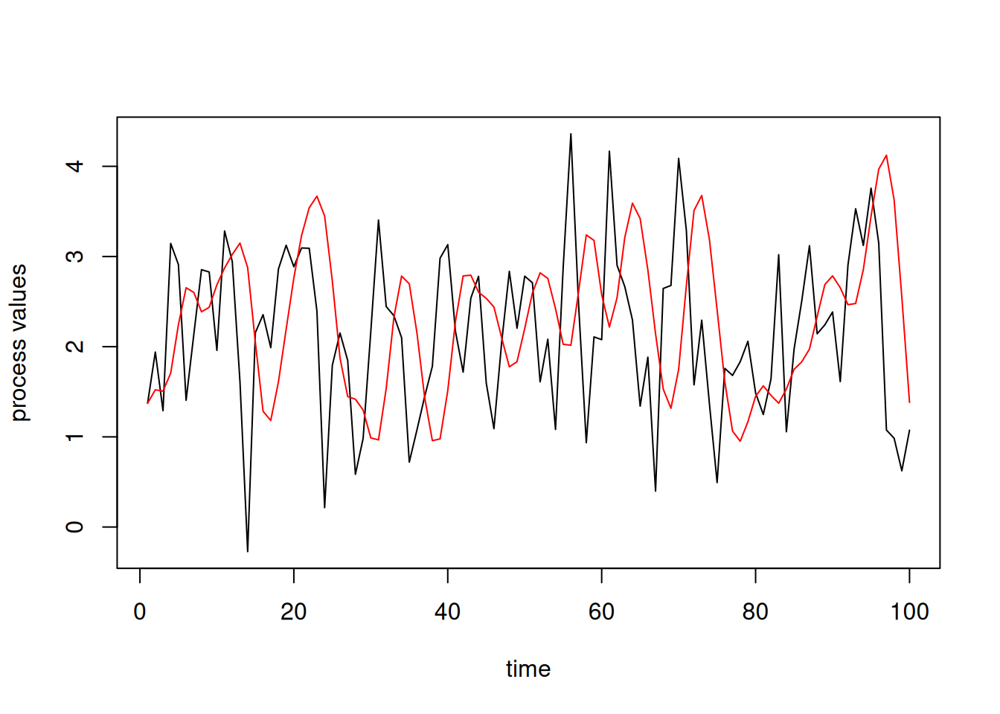

Functions are one of the most important constructs in R (and many other languages). They allow you to modularize your code - encapsulating a set of repeatable operations as an individual function call.
Operations are carried out with functions. Functions take objects as inputs and return objects as outputs.
An analysis can be considered a pipeline of function calls, with output from a function used later in a subsequent operation as input to another function.
Functions themselves are objects with a class and that you can manipulate:
You should rely heavily on functions rather than having long sets of expressions in R scripts.
Functions have many important advantages:
They reduce bugs by avoiding having multiple instances of the same functionality.
They reduce time involved in coding by eliminating redundancy.
They make for cleaner and more easily-readable code.
A basic goal is writing functions is modularity.
In general, a function should
be fairly short,
be focused and specific in what it does,
be designed so that it can be used in combination with other functions to carry out more complicated operations,
generally make use only of arguments to the function and internal variables.
Function arguments
R can match arguments by name (when provided) or by position (the fall-back). It also allows one to specify default values so that the user doesn’t have to explicitly provide all the arguments.
log(100)
[1] 4.60517
log(100, base =10)
[1] 2
log(100, 10)
[1] 2
log(base =10, 100)
[1] 2
log(base =10, x =100)
[1] 2
What is the “…” argument for?
The ... construct allows a function to take an unspecified number of arguments, e.g.,
c
function (...) .Primitive("c")
sum
function (..., na.rm = FALSE) .Primitive("sum")
Using ... as one of the arguments to a function allows a function to pass along user-provided arguments without specifying explicitly what the user might provide.
Here’s an example of tailoring some plotting specifications that I use a lot.
Functions in R are (roughly) pass-by-value and not pass-by-reference. This means that if you modify an argument inside the function it will not change the original value outside the function.
x <-rnorm(3)myfun <-function(x) { x[1] <-0return(x)} new_x <-myfun(x)print(new_x)
[1] 0.00000000 0.04495925 0.41429472
print(x)
[1] -1.49975664 0.04495925 0.41429472
This protects you from a major potential source of side effects. (There are exceptions to this rule.)
Call-by-value
In actuality, functions in R are call-by-value.
This behavior is equivalent to copy-on-modify discussed in Unit 2.
library(pryr)if(exists('y')) rm(y)f <-function(x, print_mem =FALSE){if(print_mem) print(mem_used())cat("Address of x from `address()`:\n")print(address(x)) # address() is wrong here!cat("Address of x from `inspect()`:\n")print(.Internal(inspect(x))) x[1] <-7if(print_mem) print(mem_used())cat("Address of x after modification:\n")return(x)}n <-10y <-rnorm(n)y[1:3]
[1] -0.3408515 1.4442336 0.9755286
cat("Address of y:\n")
Address of y:
print(address(y))
[1] "0x60d1fed2f4f8"
z <-f(y)
Address of x from `address()`:
[1] "0x60d1fdef4c38"
Address of x from `inspect()`:
@60d1fed2f4f8 14 REALSXP g0c5 [REF(3)] (len=10, tl=0) -0.340851,1.44423,0.975529,-0.651286,-0.517029,...
[1] -0.3408515 1.4442336 0.9755286 -0.6512864 -0.5170294 -0.2892016
[7] 1.8911776 0.9452972 0.5889776 -0.5632244
Address of x after modification:
z[1:3]
[1] 7.0000000 1.4442336 0.9755286
cat("Address of z:\n")
Address of z:
print(address(z))
[1] "0x60d1fed3b958"
Strangely, address gives the wrong answer when used inside f above. I’m not sure what is going on, but using .Internal(inspect) or trying this with a large value of n and seeing that memory use does not increase confirms that copy-on-modify is working.
Variable scope and global variables
In general functions should not make use of variables from outside the function. (However, for quick-and-dirty work and in some other circumstances, one may do this.) This provides modularity and reduces bugs and surprises.
If R can’t find a variable that is used in a function based on the function arguments and variables defined locally in the function, it goes and looks elsewhere following a set of rules called lexical scoping.
(This type of scoping has to do with R’s roots (and explains why R is very similar to other languages for functional programming) - we won’t go into details here but certainly worth looking into as you start using R more.)
Basically this means that it looks for variables relative to where the function is defined (not relative to where the function is called).
This can get involved, but a couple brief examples illustrate the basic idea.
x <-2f <-function(y) {return(x + y)}f(1)
[1] 3
g <-function(y) { x <-10return(f(y))}g(1)
[1] 3
g <-function(y) { f <-function(y) {return(x + y) } x <-10return(f(y))}g(1)
[1] 11
Note that x is used as a global variable here, which in general is bad practice.
Why does scoping work that way?
Consider the lm function. It uses lm.fit for its actual computation.
Suppose scoping depended on where the function (lm in this case) is called from? What would happen now:
x <-rnorm(5)y <-rnorm(5)lm(y ~ x)lm.fit <-function(...) print('Better luck next time, sucker.')lm.fit()lm(y~x)
R’s scoping, in combination with package namespaces (collections of variables associated with a package) protects against this kind of problem.
Object-oriented programming (OOP) in R
Confusingly, R has three (well, actually five) different systems for OOP. This can be confusing, but they get the job done for a lot of tasks.
S3: informal system used for lm(), glm(), and many other core features in R in the stats package
S4 (and R7): more formal system, used with lme4
R6 (and Reference Classes): new systems allowing for passing objects by reference, with R6 similar to OOP in other languages
For most users, I think it’s enough to understand two of the systems:
To understand how base R works, it’s helpful to understand S3.
To use OOP in a fashion similar to Python and C++, I suggest using R6.
Basics of object-oriented programming (OOP)
The basic idea is that coding is structured around objects, which belong to a class, and methods that operate on objects in the class.
Objects are like lists, but with methods that are specifically associated with particular classes.
Objects have fields, analogous to the components of a list.
Working with S3 classes and methods
S3 objects are generally built upon lists.
mod <-lm(gapminder$lifeExp ~log(gapminder$gdpPercap))class(mod)
The magic of R’s S3 OOP approach here is that ‘generic’ methods (i.e., functions) can be tailored to work specifically with specific kinds of objects. This has been called “functional OOP” because the generic methods look like regular functions. It’s basically how Julia works as well.
summary(gapminder$lifeExp)
Min. 1st Qu. Median Mean 3rd Qu. Max.
23.60 48.20 60.71 59.47 70.85 82.60
summary(mod)
Call:
lm(formula = gapminder$lifeExp ~ log(gapminder$gdpPercap))
Residuals:
Min 1Q Median 3Q Max
-32.778 -4.204 1.212 4.658 19.285
Coefficients:
Estimate Std. Error t value Pr(>|t|)
(Intercept) -9.1009 1.2277 -7.413 1.93e-13 ***
log(gapminder$gdpPercap) 8.4051 0.1488 56.500 < 2e-16 ***
---
Signif. codes: 0 '***' 0.001 '**' 0.01 '*' 0.05 '.' 0.1 ' ' 1
Residual standard error: 7.62 on 1702 degrees of freedom
Multiple R-squared: 0.6522, Adjusted R-squared: 0.652
F-statistic: 3192 on 1 and 1702 DF, p-value: < 2.2e-16
Question: What do you think R is doing behind the scenes?
Consider summary.lm.
More on working with S3 classes and methods
library(methods)yb <- gapminder$lifeExp >75yc <- gapminder$lifeExpx <-log(gapminder$gdpPercap)mod1 <-lm(yc ~ x)mod2 <-glm(yb ~ x, family = binomial)mod2$residuals[1:20] # access field with list-like syntax
[1] add1 anova coerce confint cooks.distance
[6] deviance drop1 effects extractAIC family
[11] formula influence initialize logLik model.frame
[16] nobs predict print profile residuals
[21] rstandard rstudent show sigma slotsFromS3
[26] summary vcov weights
see '?methods' for accessing help and source code
methods(predict)
[1] predict.ar* predict.Arima*
[3] predict.arima0* predict.glm
[5] predict.HoltWinters* predict.lm
[7] predict.loess* predict.mlm*
[9] predict.nls* predict.poly*
[11] predict.ppr* predict.prcomp*
[13] predict.princomp* predict.smooth.spline*
[15] predict.smooth.spline.fit* predict.StructTS*
see '?methods' for accessing help and source code
predict
function (object, ...)
UseMethod("predict")
<bytecode: 0x60d1fa96c018>
<environment: namespace:stats>
# predict.glm
When predict() is called on a GLM object, it first calls the generic predict(), which then recognizes that the first argument is of the class glm and immediately calls the right class-specific method, predict.glm() in this case.
Making your own S3 class/object/method
Making an object and class-specific methods under S3 is simple.
rboot2025 <-list(month ='August', year =2025, instructor ='Paciorek', attendance =100)class(rboot2025) <-"workshop"rboot2025
print.workshop <-function(x) {with(x,cat("A workshop held in ", month, " ", year, "; taught by ", instructor, ".\nThe attendance was ", attendance, ".\n", sep =""))invisible(x)}# doesn't execute correctly in the slide creation, so comment out here:# rboot2025
Note that we rely on the generic print() already existing in R. Otherwise we’d need to create it.
Brief introduction to R6 Classes
R6 classes are a somewhat-recent feature in R that provides object-oriented programming with behavior more like in other languages like Python and C++.
Here’s an extended example that simulates random time series.
library(R6)tsSimClass <-R6Class("tsSimClass",## Class for holding time series simulatorspublic =list(## Public methods (and possibly fields) are the user-facing interface.initialize =function(times, mean =0, corParam =1){library(fields)stopifnot(is.numeric(corParam), length(corParam) ==1)stopifnot(is.numeric(times)) private$times <- times private$n <-length(times) private$mean <- mean private$corParam <- corParam private$currentU <-FALSE private$calcMats() },simulate =function() {if(!private$currentU) private$calcMats()## analogous to mu+sigma*z for generating N(mu, sigma^2)return(private$mean +crossprod(private$U, rnorm(private$n))) },changeTimes =function(newTimes){# Modifies a private member field (i.e., a 'setter') and recalculates. private$times <- newTimes private$calcMats() },getTimes =function(){# A 'getter' methodreturn(private$times) },print =function(){ # 'print' methodcat("R6 Object of class 'tsSimClass' with ", private$n, " time points.\n", sep ='')invisible(self) } ),## Private methods and functions not accessible externallyprivate =list(calcMats =function() {## Calculates correlation matrix and Cholesky factor.## Caches results of expensive computation. lagMat <- fields::rdist(private$times) # local variable corMat <-exp(-lagMat^2/ private$corParam^2) private$U <-chol(corMat) # square root matrixcat("Done updating correlation matrix and Cholesky factor.\n") private$currentU <-TRUEinvisible(self) },# Internal (private) fields not directly accessible from outside the objectn =NULL, times =NULL,mean =NULL,corParam =NULL,U =NULL,currentU =FALSE )) my_ts <- tsSimClass$new(1:100, 2, 1)
Loading required package: spam
Spam version 2.11-1 (2025-01-20) is loaded.
Type 'help( Spam)' or 'demo( spam)' for a short introduction
and overview of this package.
Help for individual functions is also obtained by adding the
suffix '.spam' to the function name, e.g. 'help( chol.spam)'.
Attaching package: 'spam'
The following objects are masked from 'package:base':
backsolve, forwardsolve
Loading required package: viridisLite
Try help(fields) to get started.
Done updating correlation matrix and Cholesky factor.
my_ts
R6 Object of class 'tsSimClass' with 100 time points.
set.seed(1)y <- my_ts$simulate() # Generate a time series.plot(my_ts$getTimes(), y, type ='l', xlab ='time',ylab ='process values')## We can't directly access private fields or methods.## These will fail:# my_ts$times# my_ts$calcMats()my_ts <- tsSimClass$new(1:100, 2, 3)
Done updating correlation matrix and Cholesky factor.
set.seed(1)y <- my_ts$simulate() # generate a second time serieslines(my_ts$getTimes(), y, col ='red')

Error and warning messages
When you write your own functions, and particularly for distributing to others, it’s a good idea to:
Check for possible errors (particularly in the input arguments) and give the user an informative error message,
Warn them if you’re detect or do something they might not have anticipated,
We can use stop() and warning() to do this. They’re the same functions that are being called when you see an error message or a warning in reaction to your own work in R.
mysqrt <-function(x) {if(is.list(x)) {warning("x is a list; converting to a vector") x <-unlist(x) }if(!is.numeric(x)) {stop("What is the square root of 'sarah'?") } else {if(any(x <0)) {warning("mysqrt: found negative values; proceeding anyway") x[x >=0] <- (x[x >=0])^(1/2) x[x <0] <-NaNreturn(x) } elsereturn(x^(1/2)) }}mysqrt(c(1, 2, 3))
[1] 1.000000 1.414214 1.732051
mysqrt(c(5, -7))
Warning in mysqrt(c(5, -7)): mysqrt: found negative values; proceeding anyway
[1] 2.236068 NaN
mysqrt(c('asdf', 'sdf'))
Error in mysqrt(c("asdf", "sdf")): What is the square root of 'sarah'?
mysqrt(list(5, 3, 'ab'))
Warning in mysqrt(list(5, 3, "ab")): x is a list; converting to a vector
Error in mysqrt(list(5, 3, "ab")): What is the square root of 'sarah'?
sqrt(c(5, -7))
Warning in sqrt(c(5, -7)): NaNs produced
[1] 2.236068 NaN
sqrt('asdf')
Error in sqrt("asdf"): non-numeric argument to mathematical function
sqrt(list(5, 3, 2))
Error in sqrt(list(5, 3, 2)): non-numeric argument to mathematical function
So we’ve done something similar to what sqrt() actually does in R.
‘Catching’ errors
When you automate analyses, sometimes an R function call will fail. But you don’t want all of your analyses to grind to a halt because one failed. Rather, you want to catch the error, record that it failed, and move on.
For me this is most critical when I’m doing stratified analyses or sequential operations.
The try() function is a powerful tool here.
Why we need to try()
Suppose we tried to do a stratified analysis of life expectancy on GDP within continents, for 2007. I’m going to do this as a for loop for pedagogical reasons, but it would be better to do this with dplyr/lapply type tools.
For the purpose of illustration, I’m going to monkey a bit with the data such that there is an error in fitting Oceania. This is artificial, but when you stratify data into smaller groups it’s not uncommon that the analysis can fail for one of the groups (often because of small sample size or missing data).
mod <-list()fakedat <- gapminder[gapminder$year ==2007, ]fakedat$gdpPercap[fakedat$continent =='Oceania'] <-NAfor(cont inc('Asia', 'Oceania', 'Europe', 'Americas', 'Africa')) {cat("Fitting model for continent ", cont, ".\n") tmp <-subset(fakedat, continent == cont) mod[[cont]] <-lm(lifeExp ~log(gdpPercap), data = tmp)}
Fitting model for continent Asia .
Fitting model for continent Oceania .
Error in lm.fit(x, y, offset = offset, singular.ok = singular.ok, ...): 0 (non-NA) cases
What happened?
How we can try() harder
mod <-list()fakedat <- gapminder[gapminder$year ==2007, ]fakedat$gdpPercap[fakedat$continent =='Oceania'] <-NAfor(cont inc('Asia', 'Oceania', 'Europe', 'Americas', 'Africa')) {cat("Fitting model for continent ", cont, ".\n") tmp <-subset(fakedat, continent == cont)# Run without error-ing out. curMod <-try(lm(lifeExp ~log(gdpPercap), data = tmp))# Catch the error.if(is(curMod, "try-error")) mod[[cont]] <-NAelse mod[[cont]] <- curMod }
Fitting model for continent Asia .
Fitting model for continent Oceania .
Error in lm.fit(x, y, offset = offset, singular.ok = singular.ok, ...) :
0 (non-NA) cases
Fitting model for continent Europe .
Fitting model for continent Americas .
Fitting model for continent Africa .
Error in base::rowSums(x, na.rm = na.rm, dims = dims, ...): 'x' must be numeric
## Here are the commands we'll use in the demo.if(FALSE) {traceback()debug(buggyFun)buggyFun(gapminder)undebug(buggyFun)options(error = recover)buggyFun(gapminder)}
We can use debug() to step through a function line by line
After an error occurs, we can use traceback() to look at the call stack (the series of nested function calls) to determine the steps leading to the error. (Note that Python error message show the stack. R’s do not.)
More helpfully, if we set options(error = recover) before running code, we can go into the function call in which the error occurred
We can insert browser() inside a function to set breakpoints and R will stop there and allow us to proceed with debugging statements
You can temporarily insert code into a function (including built-in functions) with trace(fxnName, edit = TRUE)
These tools are integrated into RStudio as a visual debugger.
Testing
Testing should be performed on multiple levels and begun as early as possible in the development process. For programs that accept input either from a user or file, it is important that the code validates the input is what it expects to receive. Tests that ensure individual code elements (e.g., functions, classes, and class methods) behave correctly are called unit tests. Writing unit tests early in the process of implementing new functionality helps you think about what you want a piece of code to do, rather than just how it does it. This practice improves code quality by focusing your attention on use cases rather than getting lost in implementation details.
The testthat package is very helpful for setting up tests.
For automated testing (continuous integration), many developers use GitHub Actions to run a test suite automatically (e.g., for each pull request or each commit). Here’s an example from an R package that I am a developer of. One creates a configuration (yaml) file and then GitHub runs the action automatically, giving the results in the Actions tab.
Breakout
Basics
Write an R function that will take an input vector and set any negative values in the vector to zero.
Using the ideas
Write an R function that will take an input vector and set any value below a threshold to be the value of threshold. Optionally, the function should instead set values above a threshold to the value of the threshold.
Augment your function so that it checks that the input is a numeric vector and return an error if not. (See the help information for stop() (or stopifnot().)
Figure out what invisible() does and why it is useful when writing functions. Use invisible() in your function from just above.
Advanced
Explore scoping in the following code. Explain why the result is 11 and not 3. Note that funGenerator() returns a function as the return object, consistent with the idea that functions are objects in R. This is an example of what is called a closure in R. Basically, the function contains object(s) enclosed with and accessible to the function.
funGenerator <-function(x) { x <-10 g <-function(y) {return(x + y) }return(g)}x <-2f <-funGenerator()f(1)
[1] 11
Source Code
---title: "Programming Concepts and Tools"format: html: theme: cosmo css: ../assets/styles.css toc: true code-copy: true code-block-bg: true code-block-border-left: "#31BAE9" code-tools: trueexecute: freeze: auto---```{r, chunksetup}#| include: false# include any code here you don't want to show up in the document,# e.g. package and dataset loadingrm(list=ls())library(gapminder)```# R is a functional languageFunctions are one of the most important constructs in R (and many otherlanguages). They allow you to modularize your code - encapsulating a set ofrepeatable operations as an individual function call.* Operations are carried out with functions. Functions take objects as inputs and return objects as outputs. * An analysis can be considered a pipeline of function calls, with output from a function used later in a subsequent operation as input to another function.* Functions themselves are objects with a class and that you can manipulate: ```{r}medianargs(median)class(median)myfun <- medianlapply(list(c(2,4), c(2,6)), myfun)```# Using functionsYou should rely heavily on functions rather than having long sets ofexpressions in R scripts.Functions have many important advantages:- They reduce bugs by avoiding having multiple instances of the same functionality.- They reduce time involved in coding by eliminating redundancy.- They make for cleaner and more easily-readable code.A basic goal is writing functions is *modularity*.In general, a function should- be fairly short,- be focused and specific in what it does,- be designed so that it can be used in combination with other functions to carry out more complicated operations,- generally make use only of arguments to the function and internal variables.# Function argumentsR can match arguments by name (when provided) or by position (the fall-back). Italso allows one to specify default values so that the user doesn't have toexplicitly provide all the arguments.```{r, fun-args0}log(100)log(100, base = 10)log(100, 10)log(base = 10, 100)log(base = 10, x = 100)```# What is the "..." argument for?The `...` construct allows a function to take an unspecified number of arguments, e.g.,```{r, dotdotdot}csum```Using `...` as one of the arguments to a function allows a function to passalong user-provided arguments without specifying explicitly what the user mightprovide.Here's an example of tailoring some plotting specifications that I use a lot. ```{r, usedots, fig.cap = ""}pplot <- function(x, y, ...) { plot(x, y, pch = 16, cex = 0.6, ...)}pplot(gapminder$gdpPercap, gapminder$lifeExp, xlab = 'gdpPercap (log $)', ylab = 'life expectancy (years)', log = 'x')```# Pass-by-valueFunctions in R are (roughly) *pass-by-value* and not *pass-by-reference*. Thismeans that if you modify an argument inside the function it will not change theoriginal value outside the function. ```{r, pass-by-value}x <- rnorm(3)myfun <- function(x) { x[1] <- 0 return(x)} new_x <- myfun(x)print(new_x)print(x)```This protects you from a major potentialsource of side effects. (There are exceptions to this rule.)# Call-by-valueIn actuality, functions in R are *call-by-value*.This behavior is equivalent to copy-on-modify discussed in Unit 2.```{r}library(pryr)if(exists('y')) rm(y)f <-function(x, print_mem =FALSE){if(print_mem) print(mem_used())cat("Address of x from `address()`:\n")print(address(x)) # address() is wrong here!cat("Address of x from `inspect()`:\n")print(.Internal(inspect(x))) x[1] <-7if(print_mem) print(mem_used())cat("Address of x after modification:\n")return(x)}n <-10y <-rnorm(n)y[1:3]cat("Address of y:\n")print(address(y))z <-f(y)z[1:3]cat("Address of z:\n")print(address(z))```Strangely, `address` gives the wrong answer when used inside `f` above. I'm not sure what is going on, butusing `.Internal(inspect)` or trying this with a large value of `n` and seeing that memory use does not increaseconfirms that copy-on-modify is working.# Variable scope and global variablesIn general functions should not make use of variables from outside the function.(However, for quick-and-dirty work and in some other circumstances, one may dothis.) This provides modularity and reduces bugs and surprises.If R can't find a variable that is used in a function based on the functionarguments and variables defined locally in the function, it goes and lookselsewhere following a set of rules called *lexical scoping*.(This type ofscoping has to do with R's roots (and explains why R is very similar to otherlanguages for functional programming) - we won't go into details here butcertainly worth looking into as you start using R more.)Basically this means that it looks for variables relative to where the functionis defined (not relative to where the function is called).This can get involved, but a couple brief examples illustrate the basic idea.```{r, scoping}x <- 2f <- function(y) { return(x + y)}f(1)g <- function(y) { x <- 10 return(f(y))}g(1)g <- function(y) { f <- function(y) { return(x + y) } x <- 10 return(f(y))}g(1)```Note that `x` is used as a global variable here, which in general is badpractice.# Why does scoping work that way?Consider the `lm` function. It uses `lm.fit` for its actual computation.Suppose scoping depended on where the function (`lm` in this case) is called **from**?What would happen now:```{r, lm-scope, eval = FALSE}x <- rnorm(5)y <- rnorm(5)lm(y ~ x)lm.fit <- function(...) print('Better luck next time, sucker.')lm.fit()lm(y~x)```R's scoping, in combination with package namespaces (collections of variables associated with a package) protects against this kind of problem.# Object-oriented programming (OOP) in RConfusingly, R has three (well, actually five) different systems for OOP. This can be confusing, but they get the job done for a lot of tasks.* S3: informal system used for `lm()`, `glm()`, and many other core features in R in the *stats* package* S4 (and R7): more formal system, used with *lme4* * R6 (and Reference Classes): new systems allowing for passing objects by reference, with R6 similar to OOP in other languagesFor most users, I think it's enough to understand two of the systems:- To understand how base R works, it's helpful to understand S3.- To use OOP in a fashion similar to Python and C++, I suggest using R6.# Basics of object-oriented programming (OOP)The basic idea is that coding is structured around *objects*, which belong to a *class*, and *methods* that operate on objects in the class.Objects are like lists, but with methods that are specifically associated with particular classes.Objects have fields, analogous to the components of a list. # Working with S3 classes and methodsS3 objects are generally built upon lists.```{r}mod <-lm(gapminder$lifeExp ~log(gapminder$gdpPercap))class(mod)is.list(mod)names(mod)mod$coefficientsmod[['coefficients']]mod[[1]]```The magic of R's S3 OOP approach here is that 'generic' methods (i.e., functions) can be tailored to work specifically with specific kinds of objects. This has been called "functional OOP" because the generic methods look like regular functions. It's basically how Julia works as well.```{r}summary(gapminder$lifeExp)summary(mod)```**Question**: What do you think R is doing behind the scenes?Consider `summary.lm`.# More on working with S3 classes and methods ```{r}library(methods)yb <- gapminder$lifeExp >75yc <- gapminder$lifeExpx <-log(gapminder$gdpPercap)mod1 <-lm(yc ~ x)mod2 <-glm(yb ~ x, family = binomial)mod2$residuals[1:20] # access field with list-like syntaxclass(mod2)is(mod2, "lm")is.list(mod2)names(mod2)methods(class ="glm")methods(predict)predict# predict.glm```When `predict()` is called on a GLM object, it first calls the generic `predict()`, which then recognizes that the first argument is of the class *glm* and immediately calls the right class-specific method, `predict.glm()` in this case.# Making your own S3 class/object/methodMaking an object and class-specific methods under S3 is simple. ```{r}rboot2025 <-list(month ='August', year =2025, instructor ='Paciorek', attendance =100)class(rboot2025) <-"workshop"rboot2025is(rboot2025, "workshop")rboot2025$instructor print.workshop <-function(x) {with(x,cat("A workshop held in ", month, " ", year, "; taught by ", instructor, ".\nThe attendance was ", attendance, ".\n", sep =""))invisible(x)}# doesn't execute correctly in the slide creation, so comment out here:# rboot2025 ```Note that we rely on the generic `print()` already existing in R. Otherwise we'd need to create it.# Brief introduction to R6 ClassesR6 classes are a somewhat-recent feature in R that provides object-oriented programming with behavior more like in other languages like Python and C++.Here's an extended example that simulates random time series. ```{r, fig.cap = "", fig.width = 7}library(R6)tsSimClass <- R6Class("tsSimClass", ## Class for holding time series simulators public = list( ## Public methods (and possibly fields) are the user-facing interface. initialize = function(times, mean = 0, corParam = 1){ library(fields) stopifnot(is.numeric(corParam), length(corParam) == 1) stopifnot(is.numeric(times)) private$times <- times private$n <- length(times) private$mean <- mean private$corParam <- corParam private$currentU <- FALSE private$calcMats() }, simulate = function() { if(!private$currentU) private$calcMats() ## analogous to mu+sigma*z for generating N(mu, sigma^2) return(private$mean + crossprod(private$U, rnorm(private$n))) }, changeTimes = function(newTimes){ # Modifies a private member field (i.e., a 'setter') and recalculates. private$times <- newTimes private$calcMats() }, getTimes = function(){ # A 'getter' method return(private$times) }, print = function(){ # 'print' method cat("R6 Object of class 'tsSimClass' with ", private$n, " time points.\n", sep = '') invisible(self) } ), ## Private methods and functions not accessible externally private = list( calcMats = function() { ## Calculates correlation matrix and Cholesky factor. ## Caches results of expensive computation. lagMat <- fields::rdist(private$times) # local variable corMat <- exp(-lagMat^2 / private$corParam^2) private$U <- chol(corMat) # square root matrix cat("Done updating correlation matrix and Cholesky factor.\n") private$currentU <- TRUE invisible(self) }, # Internal (private) fields not directly accessible from outside the object n = NULL, times = NULL, mean = NULL, corParam = NULL, U = NULL, currentU = FALSE )) my_ts <- tsSimClass$new(1:100, 2, 1)my_tsset.seed(1)y <- my_ts$simulate() # Generate a time series.plot(my_ts$getTimes(), y, type = 'l', xlab = 'time', ylab = 'process values')## We can't directly access private fields or methods.## These will fail:# my_ts$times# my_ts$calcMats()my_ts <- tsSimClass$new(1:100, 2, 3)set.seed(1)y <- my_ts$simulate() # generate a second time serieslines(my_ts$getTimes(), y, col = 'red')```# Error and warning messagesWhen you write your own functions, and particularly for distributing to others, it's a good idea to:- Check for possible errors (particularly in the input arguments) and give the user an informative error message,- Warn them if you're detect or do something they might not have anticipated,We can use `stop()` and `warning()` to do this. They're the same functions that are being called when you see an error message or a warning in reaction to your own work in R.```{r, error=TRUE}mysqrt <- function(x) { if(is.list(x)) { warning("x is a list; converting to a vector") x <- unlist(x) } if(!is.numeric(x)) { stop("What is the square root of 'sarah'?") } else { if(any(x < 0)) { warning("mysqrt: found negative values; proceeding anyway") x[x >= 0] <- (x[x >= 0])^(1/2) x[x < 0] <- NaN return(x) } else return(x^(1/2)) }}mysqrt(c(1, 2, 3))mysqrt(c(5, -7))mysqrt(c('asdf', 'sdf'))mysqrt(list(5, 3, 'ab'))sqrt(c(5, -7))sqrt('asdf')sqrt(list(5, 3, 2))```So we've done something similar to what `sqrt()` actually does in R.# 'Catching' errorsWhen you automate analyses, sometimes an R function call will fail. But you don't want all of your analyses to grind to a halt because one failed. Rather, you want to catch the error, record that it failed, and move on.For me this is most critical when I'm doing stratified analyses or sequential operations.The `try()` function is a powerful tool here.# Why we need to `try()`Suppose we tried to do a stratified analysis of life expectancy on GDP within continents, for 2007. I'm going to do this as a for loop for pedagogical reasons, but it would be better to do this with dplyr/lapply type tools.For the purpose of illustration, I'm going to monkey a bit with the data such that there is an error in fitting Oceania. This is artificial, but when you stratify data into smaller groups it's not uncommon that the analysis can fail for one of the groups (often because of small sample size or missing data).```{r, error=TRUE}mod <- list()fakedat <- gapminder[gapminder$year == 2007, ]fakedat$gdpPercap[fakedat$continent == 'Oceania'] <- NAfor(cont in c('Asia', 'Oceania', 'Europe', 'Americas', 'Africa')) { cat("Fitting model for continent ", cont, ".\n") tmp <- subset(fakedat, continent == cont) mod[[cont]] <- lm(lifeExp ~ log(gdpPercap), data = tmp)}```What happened?# How we can `try()` harder```{r}mod <-list()fakedat <- gapminder[gapminder$year ==2007, ]fakedat$gdpPercap[fakedat$continent =='Oceania'] <-NAfor(cont inc('Asia', 'Oceania', 'Europe', 'Americas', 'Africa')) {cat("Fitting model for continent ", cont, ".\n") tmp <-subset(fakedat, continent == cont)# Run without error-ing out. curMod <-try(lm(lifeExp ~log(gdpPercap), data = tmp))# Catch the error.if(is(curMod, "try-error")) mod[[cont]] <-NAelse mod[[cont]] <- curMod }mod[[1]]mod[[2]]```# DebuggingAs a scripting language, R essentially has a debugger working automatically by virtue of you often being able to easily run code line by line.But there is an official debugger and other tools that greatly help in figuringout problems, particularly for more complicated situations.Let's briefly see these in action. I'll demo this in a very basic way, but hopefully thiswill give you an idea of the power of these tools.```{r, error=TRUE}buggyFun <- function(myDF) { print(names(myDF)) myDF$id <- seq_len(nrow(myDF)) sums <- rowSums(myDF) return(sums)}buggyFun(gapminder)## Here are the commands we'll use in the demo.if(FALSE) { traceback() debug(buggyFun) buggyFun(gapminder) undebug(buggyFun) options(error = recover) buggyFun(gapminder)}```1) We can use `debug()` to step through a function line by line2) After an error occurs, we can use `traceback()` to look at the *call stack* (the series of nested function calls) to determine the steps leading to the error. (Note that Python error message show the stack. R's do not.)3) More helpfully, if we set `options(error = recover)` before running code, we can go into the function call in which the error occurred4) We can insert `browser()` inside a function to set breakpoints and R will stop there and allow us to proceed with debugging statements5) You can temporarily insert code into a function (including built-in functions) with `trace(fxnName, edit = TRUE)`These tools are integrated into RStudio as a visual debugger.# TestingTesting should be performed on multiple levels and begun as early as possiblein the development process. For programs that accept input either from a useror file, it is important that the code validates the input is whatit expects to receive. Tests that ensure individual code elements (e.g., functions,classes, and class methods) behave correctly are called *unit tests*.Writing unit tests early in the process of implementing new functionalityhelps you think about what you want a piece of code to do, rather than just howit does it. This practice improves code quality by focusing your attentionon use cases rather than getting lost in implementation details.The *testthat* package is very helpful for setting up tests.For automated testing (continuous integration), many developers use GitHub Actions to run a test suite automatically (e.g., for each pull request or each commit). Here's an [example](https://github.com/nimble-dev/nimbleHMC/blob/master/.github/workflows/tests.yaml) from an R package that I am a developer of. One creates a configuration (yaml) file and then GitHub runs the action automatically, giving the results in the [Actions tab](https://github.com/nimble-dev/nimbleHMC/actions).# Breakout### Basics1) Write an R function that will take an input vector and set any negativevalues in the vector to zero.### Using the ideas2) Write an R function that will take an input vector and set any value below athreshold to be the value of threshold. Optionally, the function should insteadset values above a threshold to the value of the threshold.3) Augment your function so that it checks that the input is a numeric vectorand return an error if not. (See the help information for `stop()` (or `stopifnot()`.)4) Figure out what `invisible()` does and why it is useful when writingfunctions. Use `invisible()` in your function from just above.### Advanced5) Explore scoping in the following code. Explain why the result is 11 and not 3. Note that `funGenerator()` returns a function as the return object,consistent with the idea that functions are objects in R. This is an example ofwhat is called a *closure* in R. Basically, the function contains object(s)enclosed with and accessible to the function.```{r, closure-scoping} funGenerator <- function(x) { x <- 10 g <- function(y) { return(x + y) } return(g) } x <- 2 f <- funGenerator() f(1) ```